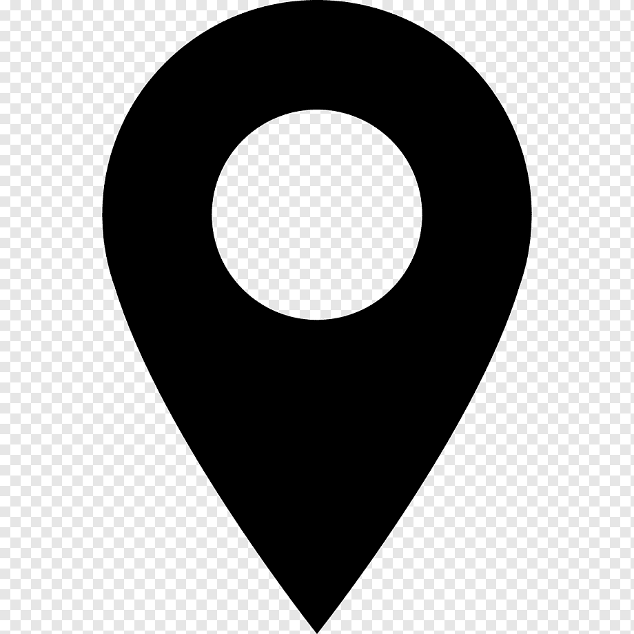

Bianca-Georgiana Padurean
Nationality: Romanian
Tel: (+40)747793405
Date of birth: 23/04/2000
Gender: Female
 Email address:
Email address:
 LinkedIn:
LinkedIn:
 Address: Strada Alba Iulia nr.32, 315200 Curtici
(Romania)
 ABOUT ME
ABOUT ME
I am a hard-working, honest, friendly, and realistic person. I generally tend to be objective when
it comes to solving a problem or a
task, I prefer to see both sides before making a decision. My purpose is to evolve day by day and be
that type of employee who puts
their all into their job and of course, does all they can to help their employer achieve their
goals. My passions are sports,
programming, music, debating topics.
 EDUCATION AND TRAINING
EDUCATION AND TRAINING
Student
University Politehnica of Timisoara, Faculty of Computer Science, Systems Engineering [ 30/09/2019 -
Current ]
Address: Blvd Vasile Parvan, nr. 2, 300223 Timisoara (Romania)
High School Diploma
National College "Elena Ghiba Birta" [ 14/09/2015 - 31/05/2019 ]
Address: Blvd Dragalina, nr. 6, 310125 Arad (Romania)
DIGITAL SKILLS
C / C++ / C# / Java / Basic SQL, HTML, CSS, PHP / Basic Arduino Programming / MATLAB, Matlab
Simulink
 PROJECTS
PROJECTS
PID controller
The basic function of the project is temperature control using the PID controller. The project
consists of a user
interface, using a 16x2 LCD display, menus for setting: constants Kp, Ki, Kd, Setpoint, temperature
and time.
Other components used were: a transistor module, an LM35 temperature sensor, a light bulb, an
adjustable source.
Tinkercad Project
I made a project in the Tinkercad environment, which uses commands to program the internal registers
of the Atmega328p
microcontroller.
LANGUAGE SKILLS
Mother tongue(s): Romanian
Other language(s):
| Listening | Reading | Spoken production | Spoken interaction | Writing | |
|---|---|---|---|---|---|
| English | B2 | B1 | B2 | B2 | B2 |
| French | A2 | B1 | A2 | A2 | A2 |
VOLUNTEERING
Red Run
[ Arad ]